6.05 00-6.05 20:02
是睡到自然醒的一天。十点醒来，小红说腿酸疼，那是，每天走将近两万步，酸得合情合理。
11:00把行李寄存在前台我俩去附近吃午饭。午饭吃的是纳西族的特色纳西烤鱼，鱼是好鱼，饭是好饭，就是这餐馆的就餐环境差点事，望改进。
吃完饭才12:30，我俩又来丽江古城游荡了。目的地是木府，在美团上买了优惠门票40块，其实现场买票也是40，一样一样。
6.05 00-6.05 20:02
是睡到自然醒的一天。十点醒来，小红说腿酸疼，那是，每天走将近两万步，酸得合情合理。
11:00把行李寄存在前台我俩去附近吃午饭。午饭吃的是纳西族的特色纳西烤鱼，鱼是好鱼，饭是好饭，就是这餐馆的就餐环境差点事，望改进。
吃完饭才12:30，我俩又来丽江古城游荡了。目的地是木府，在美团上买了优惠门票40块，其实现场买票也是40，一样一样。
6.4 00:00 - 6.4 23:59
今天起得比之前几天晚些，日程安排简单，可以慢悠悠地逛。
大约10点出了客栈的门，来到古城的88号小吃店，一家网红店，专卖云南特色小吃。我们点了炒鸡云南粑粑（味道像炒馒头片）、炒饵丝（像年糕）、脆椒鸡豆粉（油重，腻）作为早午餐。

我两个都是食量小的人，面对三大盘不合口味的炒面食完全崩溃，剩了好多。
然后徒步1.5公里，穿过古镇去了今晚住的如家酒店放行李，在古城大水车附近。上午的古镇很冷清，很多铺子还没开门，比如我们来的小吃店十点钟的时候正在整理食材，店里一片凌乱。
11点来到酒店，我们的房间免费从无窗升到了有窗。环境还不错，一出门就是红太阳广场公交站。
12:00我们来到了束河古镇。从古镇南门需要30块门票，从北门进不要钱。这个古镇最多逛两个小时，和丽江古城大同小异，感觉没丽江古镇优美。

由于午饭吃得过早，所以从古镇出来后我们前往忠义市场觅食。
14:30到达忠义市场。这就是一个菜市场，里面的东西挺便宜，有卖水果、日用品和家禽海鲜的，和我老家的早市类似。买了杨梅、香蕉和芒果，好吃。

然后前往沱江鱼府吃三文鱼，点了一个双人套餐，吃到目光呆滞，饭晕，好评。

吃了整整两小时后绕古城溜达着消食。
在古城的大水车打卡。

有名的酒吧一条街。

在四方街还遇上了纳西族在古城内的篝火晚会，大家伙围成一个圈载歌载舞，越来越多的人加入。

大概20:00回到酒店。
收到了母亲大人发来的消息，得到了爸爸妈妈的点拨。
我妈妈已经成为广场舞大妈中最靓的仔了。走的是凌波微步。

——❤️❤️❤️❤️❤️睡觉❤️❤️❤️❤️❤️——
明天又是美好的一天
—❤️❤️❤️❤️❤️❤️❤️❤️❤️❤️❤️❤️❤️—
6.03 00:00-6.03 23:59
这么危急的关头，那哪能睡好啊。半睡半醒一夜就过去了。平时一直能睡的小红今天也醒得格外早，我俩心里都在担心。昨天导游通知早上六点半下来吃早饭。我们6点起床，六点半准时到达大厅，外面凉风嗖嗖，只有一个皮肤黝黑的卓玛隔着餐厅盯着我们，难道我们被监视了？被抛弃了？毛骨悚然……
借口上厕所，我俩拿着房卡来到了4楼，借机寻找团里的伙伴。按理说约定的时间已经到了，结果整个楼道里还是只有我两个游荡，他们是导游的帮凶？陪导游在我俩面前演了一场戏？
事实证明，这群人只是不守时而已，约定六点半集合他们六点半才起。看到游玩途中和我们交流最多的一对东北小夫妻来了，我就放心了，不管怎么样，我和红仔还有伙伴，老铁给力。
早餐是馍馍加榨菜，大米粥，还有一盆米线。我吃了一个馍两碗粥，红仔吃了两个馍（战斗需要保持体力）。
接下来要去的是龟山公园，离我们住宿的地方很近，07:00出发，司机开着车龟速前进，硬生生用了将近1个小时才到达目的地，这期间导游开始给大家伙洗脑，主题就是“人人都需要玉石，云南的玉石值得购买”。导游的洗脑覆盖了各类人群，主要是针对车里的卓玛们，毕竟女人的购买力很强悍。有对象的卓玛，让对象掏钱买玉石，那才是真正的爱你；单身的卓玛，要对自己好点，赶紧买个大肚弥勒佛戴；卓玛扎西们，你们出来玩还应该想想父母，子欲养而亲不待，趁现买块玉石孝顺父母……中心思想就是每个人都需要玉石，赶紧去买吧！大家伙买了才能给导游提高业绩，导游才能有钱赚。扎西卓玛们做个人吧！出来旅游花钱才能开心才是要脸！（这个尼玛导游脑壳厚脑仁小，景点介绍一个不讲，大把的时间强制购物，引起极度不适。）
8:10进了玉石店，我俩混迹在人群中降低存在感。可能是柜台导购看出我俩没啥子💰，也没硬推销（毕竟全场最便宜的玉石边角料都980……贵得要几十万，要不起要不起），开始给我们推荐丽江的好玩好吃。比如我俩get了“大石桥过桥米线”，“鸡豆凉粉（忠义市场可吃到正宗的）”，“纳西烤鱼（丽江是纳西族人的聚集地）”。
就这样在玉石店逛了1.5小时，我们只看不摸，和玉石保持适度距离，9:40终于可以出来了（如果中途离开了玉石店的话，是会被导游㩝回来的）。团里有两个家庭买了玉石，那他们的消费额必定是5000+，有钱真好……
然后去看紧挨着玉石店的世界上最大的转经筒20分钟，9:10集合。围绕转经筒转的圈数应该是奇数，且必须朝顺时针方向转动，所以我俩转了一圈……来转经祈福的人络绎不绝。
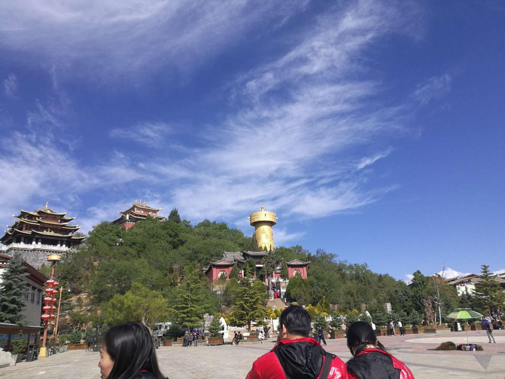
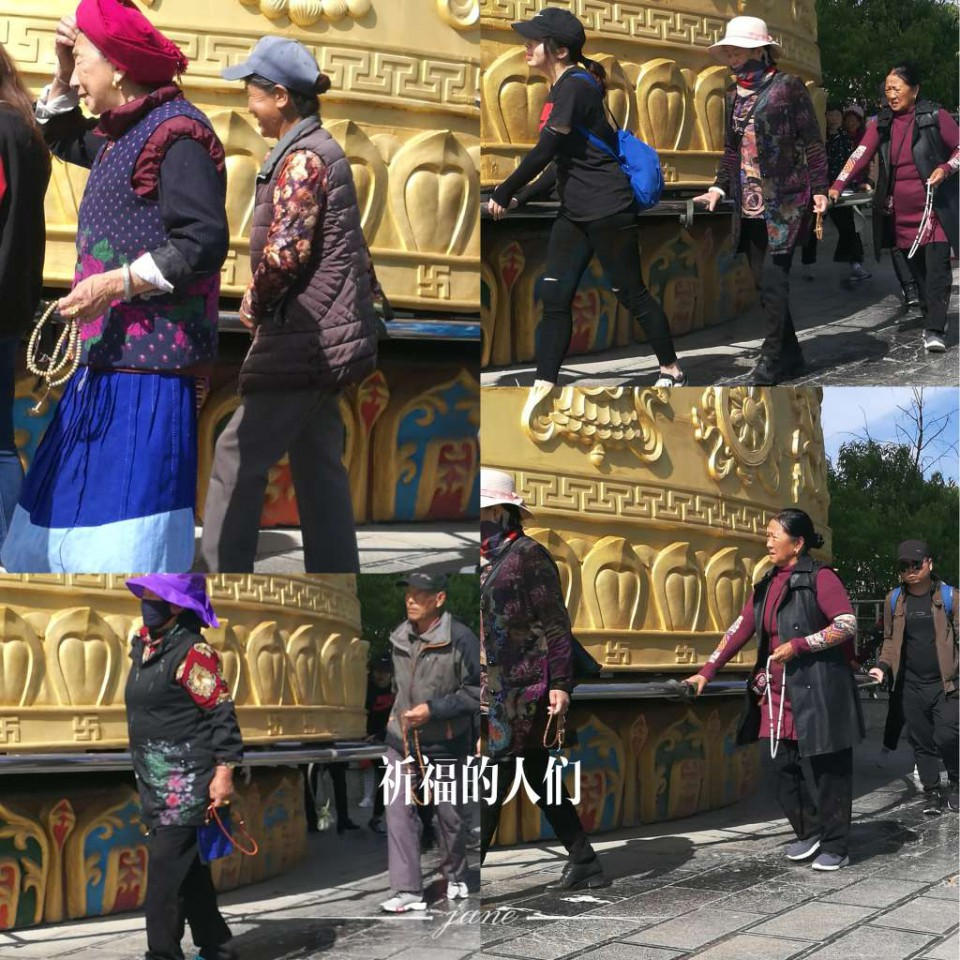
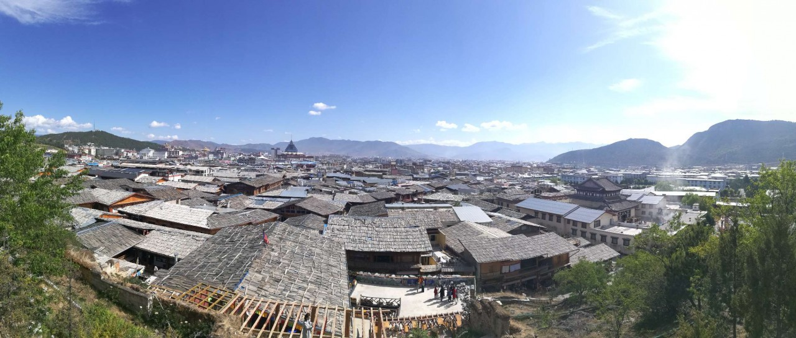
转经筒是属于独克宗古城的，然而我们没有进古城内浏览，时间全花费在了购物店里。这不，刚逛完玉石店，又来到了一个村民联合社（？），这是同一个村子里的藏民开的店铺集合。里面有尼玛导游的家族人开的柜台，看着办吧！尼玛导游的姐妹们向大家伙推销藏红花，松茸等等等药材，是论克卖的，比如藏红花一克80块，价格是市面上的两倍，喝藏红花调理身体以10g为一个疗程，一个疗程800块（尼玛导游明说了，就是要在游客身上找钱，让游客把钱花在他的家乡）……仰天长叹，我们这是入了虎穴呀！
在这个购物店里，每个家庭都消费了200+。我和红仔害怕被抛弃在荒郊野岭，所以也消费了200块的风干牛肉（买完后肉疼心疼脑壳疼……），不确定到底是不是正经牦牛肉。
————☘☘☘☘小插曲☘☘☘☘☘————
虽然尼玛导游一路的嘚吧嘚让我们极度厌烦甚至害怕，但也有有趣的事。
藏民的婚姻制度有一夫多妻制和一妻多夫制。在村民联合社门口就见到了一位娶了两个老婆的扎西。据说是花了60万，卖了20头牦牛娶回来的。
——☘☘☘☘☘☘☘☘☘☘☘☘☘☘☘☘——
购物完毕后，去吃午饭，大约用了20分钟。伙食极差，重点还是推销，在这个旅游城市处处有推销，比如饭桌上供品尝的辣条、甜食、肉酱。
午饭后，我内心的警惕完全放松了，起码我俩不至于被抛弃在荒山野岭，人身安全是可以得到保证的。这个时候唯一的期望就是大巴车快点开，赶紧回丽江，想回到文明的城市。
13:00左右我们前往香格里拉行程的最后一站，虎跳峡。其实这种没有文化底蕴的自然景观不得我心，但也不妨碍它的壮阔。
游览完虎跳峡大约16:15，向丽江出发！
18:00终于回到了文明地。
回来后那毒妇还觍着脸发微信我们“玩得顺利吧？回来了吗？我去接你们呀？”接个鬼，还想让我们住你家房子？做梦！回去就投诉你！
——❤️❤️❤️❤️❤️感想❤️❤️❤️❤️❤️——
回家吧回家吧，家是自己唯一的城堡。
——❤️❤️❤️❤️❤️❤️❤️❤️❤️❤️❤️❤️——
回到丽江后，我们住进了狗子推荐的客栈。很不错，房子是木质结构，内部装修很别致。
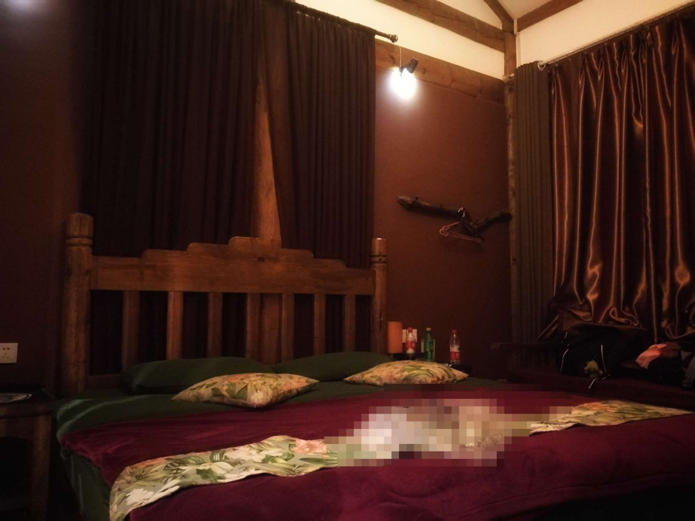
安顿好行李后我们来到了网红店“二哥土鸡米线”，鸡汤米线很好吃，他家的肉夹馍更是让人流口水。
卤鸡脚也很入味，hhhhh。
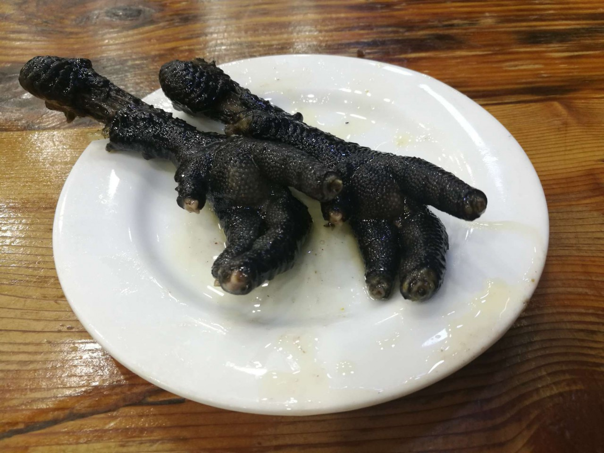
吃完后夜游丽江古城。
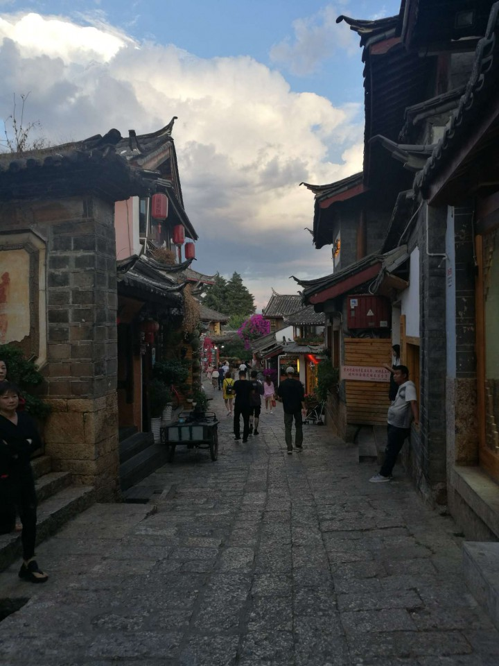
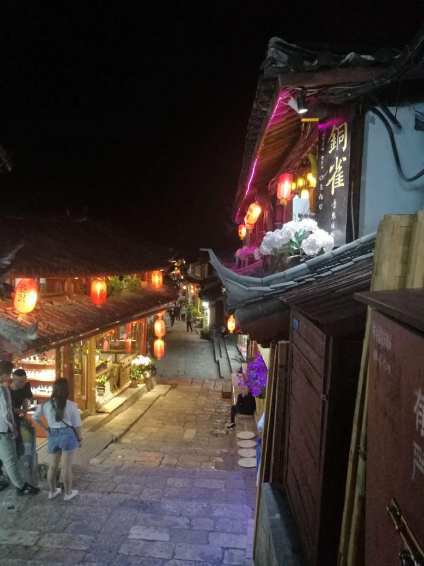
途中还收到了家人的问候，人在异乡，再亲切不过了！
回客栈后，小分队群里又有动静了。狗子她们报了客栈老板推荐的团，于是，有了下面的对话。
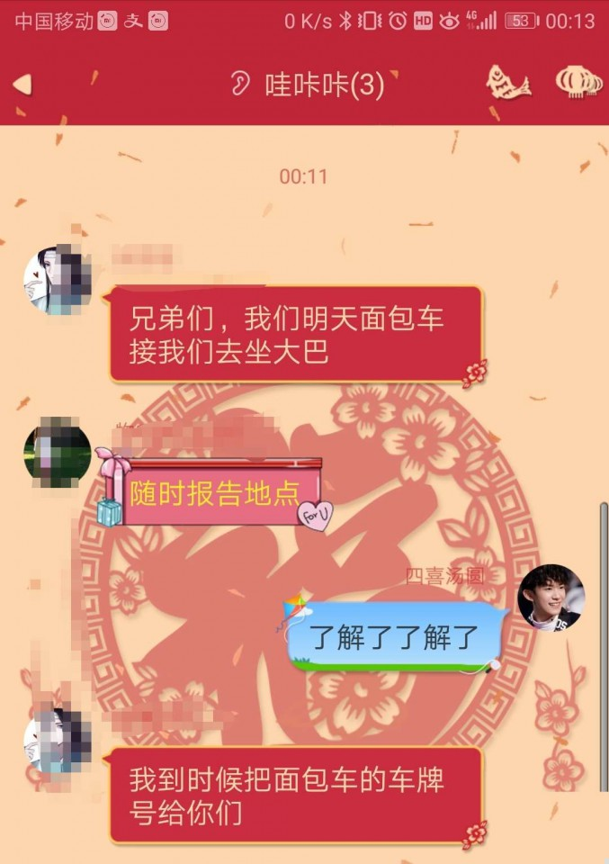
在丽江、大理，无论在哪里，都会有人极热情地问你家长里短，随时有可能被搭讪，聊着聊着就开始推销，他们的嘴，骗人的鬼，一旦信了就是落入了圈套。要时刻保持警惕，尤其不要相信客栈老板的话，我们和这些人交流得最多，更容易在他们手里吃亏。
“姑娘，编个头发吧！”
“姑娘，买个银镯子戴吧！”
“你们是不是要去稀里哗啦公园呀？我带你们进入比买票便宜”……
头摇成了拨浪鼓，“不要不要！”赶紧拒绝。
—🌞🌞🌞祝我们旅途顺利🌞🌞🌞🌞—
6.02 00:00- 6.2 23:59
早晨6:30就起床了，收拾好东西去等车。路边极小的小笼包，6个8块，神坑，转去买了3块一根的油条当早点。
在路边时心里是忐忑的，担心旅游的大巴车上只有我和小红两个游客怎么办，如花似玉被拐卖了怎么办。如果过来的大巴不是载着几十人，我就和红仔跑路了。
大巴车来了！记住了车牌号。还好人多，那我就放心了。
超期待去香格里拉了解藏民风土人情。
进入藏区前要先了解本地的风土人情，避免触犯少数民族禁忌。
从丽江到香格里拉大约需要4小时（包括路上下车观景的时间）。车大约8点从丽江开出，12点到了一个专门接待游客吃饭的马场。在这个里面我们自助烧烤吃了午饭，供烧烤的食材包括火腿肠、不知道名字的三种肉，辣椒、豇豆、玉米，还提供了酥油茶和饼。吃过午饭后又观看了马术表演，无非是在马上倒立、一人骑两匹马一类的表演。
然后14:00到达普达措国家公园。导游取了票后让我们自己进入，等6点再回到车上集合。
事实是：我们进了公园后，首先坐公园提供的免费班车到达属都湖，大约20分钟，班车上有公园的工作人员为我们讲解。然后步行3.3公里到达公园终点。接着，乘坐免费的班车回到公园门口，大约25分钟。公园里开回的班车有很多，排队是为了维持秩序，排队时间可忽略不计。
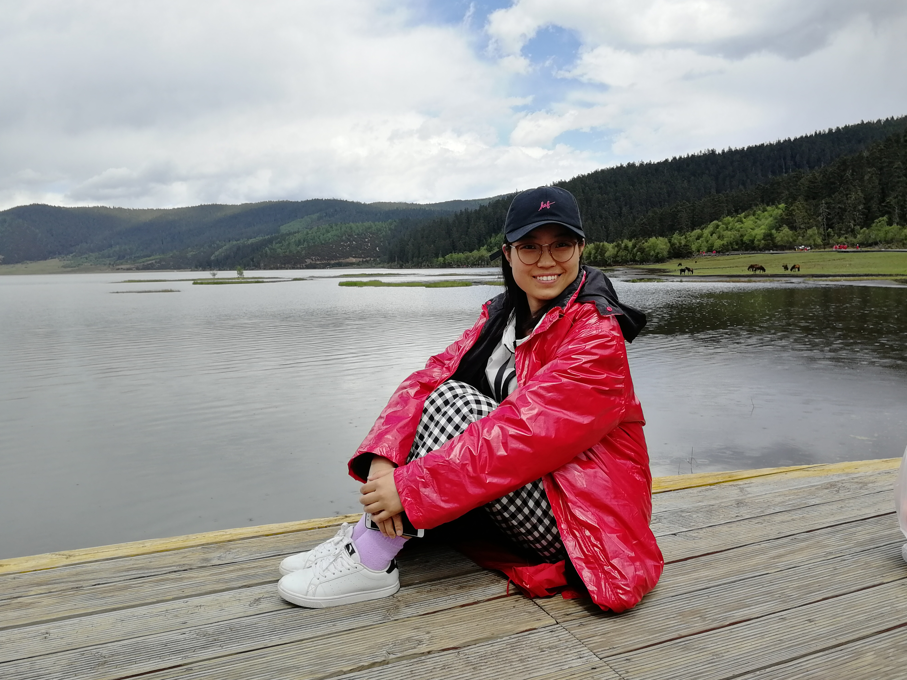
按照正常的游览速度来说，1.5小时就可从属都湖到达终点，那么大概2.5小时就可游完普达措公园，并且时间绰绰有余。那么其实我们16:30游览完毕，但导游却让我们6点集合，足足浪费了1.5小时的时间。
上面的事暂且不表，让我来说说6点钟以后发生了什么。6点来了藏民家，美其名曰“藏民家访”。刚一进门，被迫和主人合影。然后百十来号人在一个大房间里就餐，一个铜锅里煮着肉炖萝卜（大约是猪肉），还有五六个素菜（一看就不新鲜），让我们用自己面前的小锅煮着吃。照片很快就洗出来了，在就餐期间发给了我们，一张20块。最后藏民载歌载舞以篝火晚会结束。
然后来到今晚住宿的屋子，真的是辣鸡。一进门酒店大厅上的三个钟表都停摆了，大厅空荡荡，卫生极差。来到房间，房里啥也没有，卫生极差极差。但我俩也没心思管这些了。今天一整天，导游在车上重复说了好多遍好多遍，每个人必须购物，要不然把你丢下去自己找车回去。再看网络上，各种被导游坑强制购物的例子，最惨的一个是半路脱团自己在路边拦了一辆面包车回丽江，结果面包车先把他丢在了一个镇子里……（此处脑补了最限恶的状况）。最终我和小红决定，cjol半路脱团是不能的，脱离了团里的大部队才是最危险。所以明天我们先混在人群中，不购物。如果不购物实在不行的话，我们就直接去私下里尼玛导游塞钱（一人一百？不行了一人两百？我们还是没赚钱的学生啊……害怕，如果直接购物的话我们是买不起的，那里的东西都是几千几万）。这个时候我们只想安全回家。
这期间我们还和小芳小分队沟通了这个情况，她一直安慰我们不要害怕。我把支付宝里所有的钱都转给了讷讷，小红也解绑了银行卡。检查了设置好的紧急联系人。和伙伴们共享了我们这边的位置及毒妇老板的客栈名，我们乘坐的旅游大巴的车牌号。
这么决定后，开始睡觉保存战斗力。
06.01 00:00——06.01 23:59
首先，民宿差评。蚊子的叫声萦绕耳边，因为担心被蚊子咬所以睡不踏实，被咬了好几个包！
08:00收拾完毕去古城街上溜达着找早点。💰遇着一处卖包子的，10个小笼包7块，后来司机告诉我们本地人来买的话只需要6块。（冷漠微笑 骗子）
民宿老板给我们推荐了环游洱海的车，不是拉风的旅拍吉普车，只是普通的小轿车，租车的钱💰不能提，一想就肉疼心疼全身疼（此处被坑）。
洱海环线全长128公里，由于我们要赶下午15:25去丽江的火车，所以只能环游洱海的一半。洱海分海东线和海西线，我们走前者。
来到洱海边，只想说，对不起打扰了。水没有想象中清澈，海景房也被拆得七零八落，钢筋水泥外露。
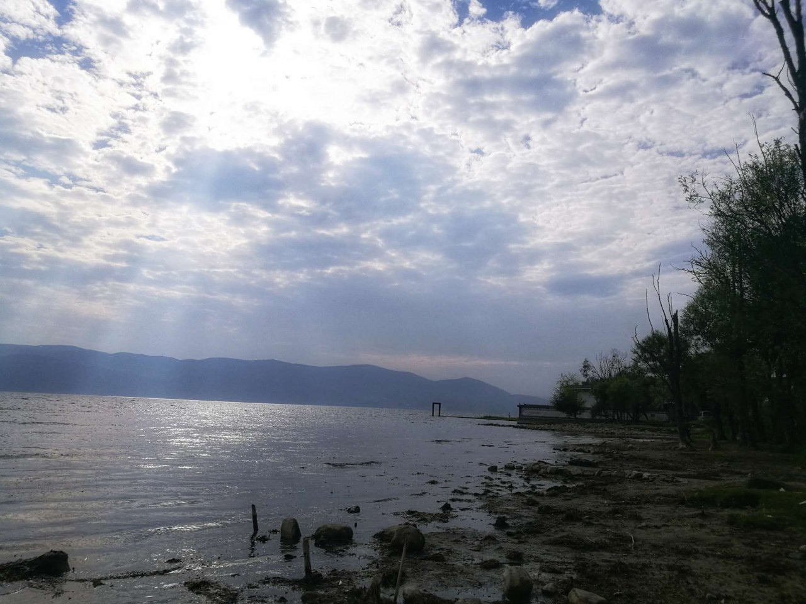
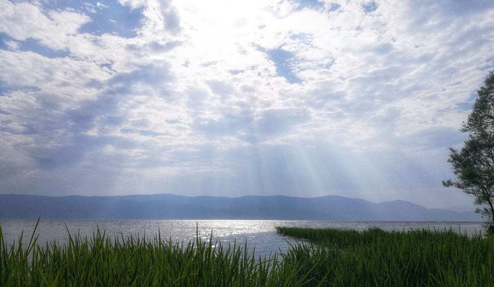
海西环线上会经过好几个村庄，这里才是大理居民真正的生活状态。大理全称为大理白族自治州，80%的居民都是白族人。
云南人民会种植烟草。
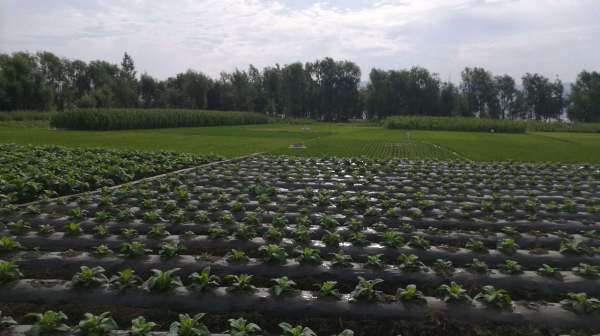
环路上还经过了“古生村”。2015年习总书记来过这里，于是这里火了。
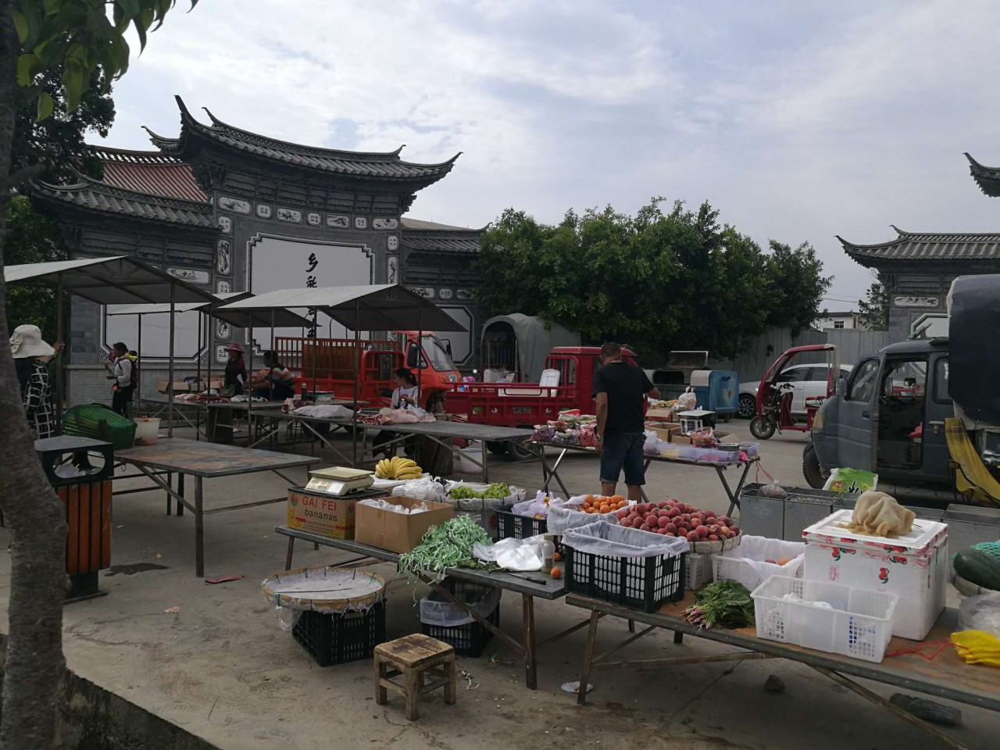
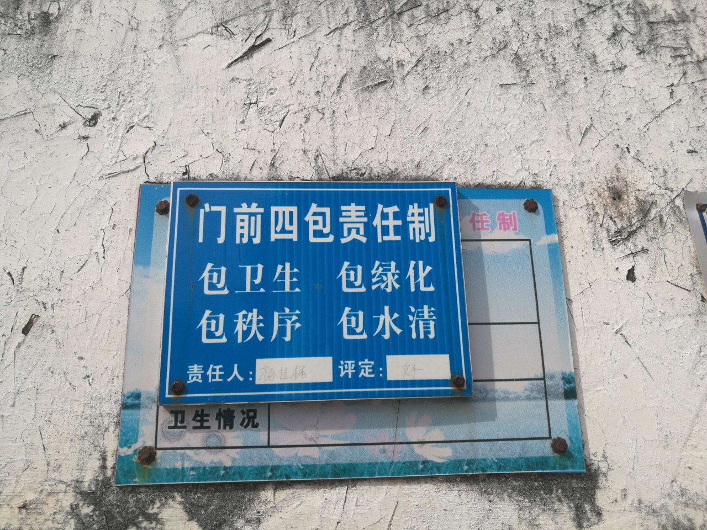
值得一提的是，大理的公共洗手间都修得非常漂亮，以至于三次经过它都没有认出，当时真的是很气了。
经过若干个村子后，来到了海舌公园。
海舌公园门口很多车在揽客。电瓶车一般人5元两个人，马车是5元一人，这些车只送到公园门口，其实很短的一条路，二路公交完全可以，没必要乘车。
在公园路边看到一大片玉米地。我大康保现在也是微风轻抚，玉米绿油油的季节，想回家。
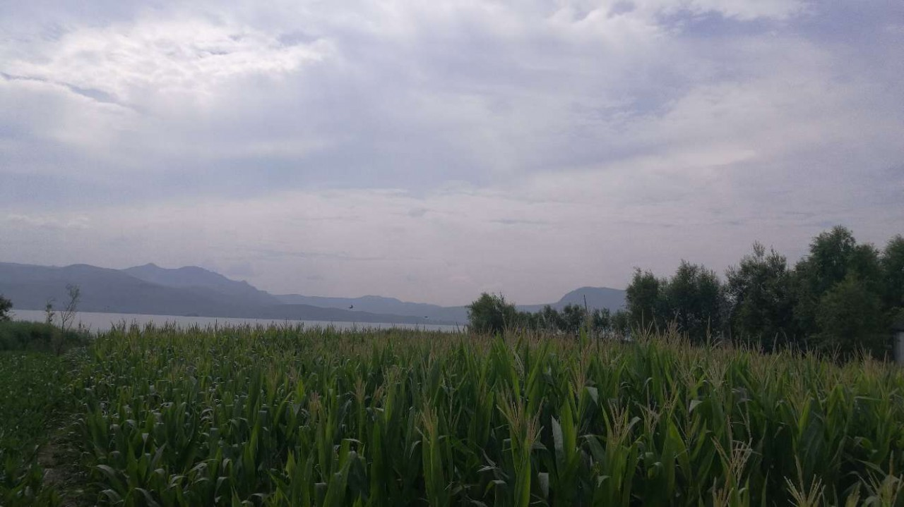
海舌公园的下一站是喜洲古镇，像其他古镇一样，就是新老房子的集合，充斥着各种商铺。拍了一些老房子的门及门框里的我们。
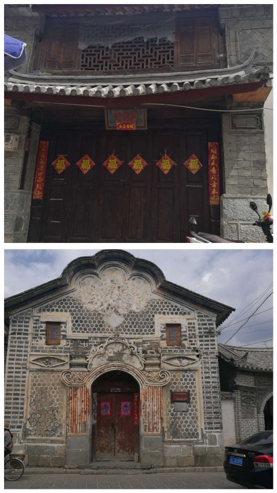
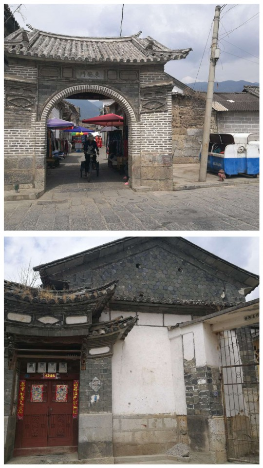
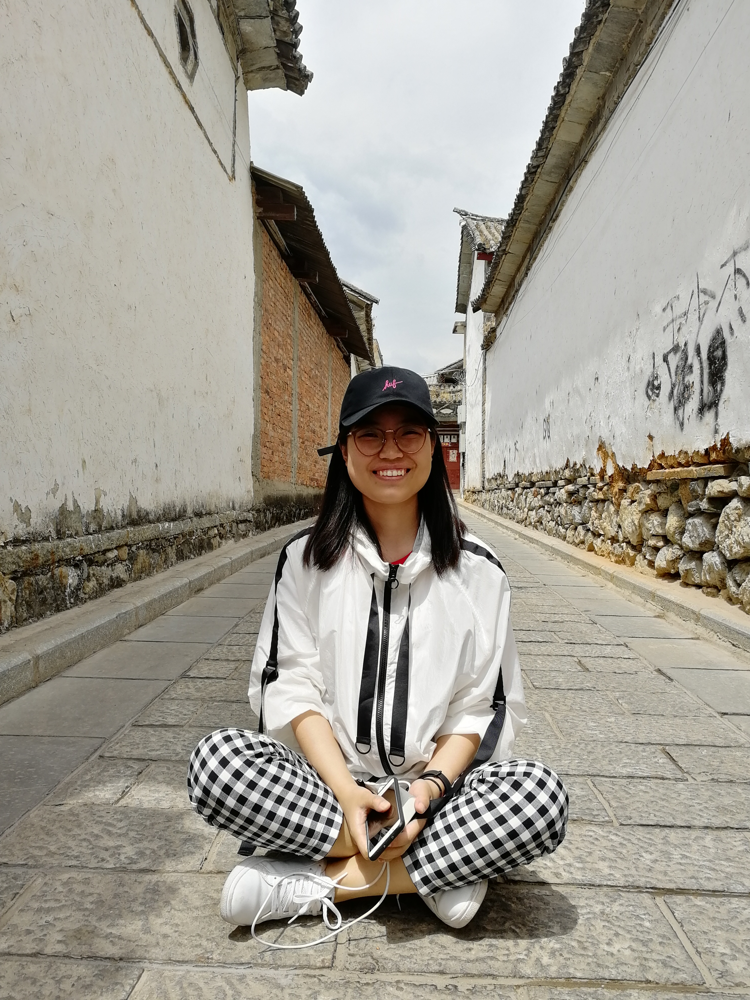

游完古镇，来到了三塔寺对面远观三塔，远眺了15分钟……（这个其实为了消磨时间，因为去火车站的时间很充裕，但也很没看头）。
继续向火车站行驶，提前一个小时到达。大理火车站很小，有两个候车厅。从大理去丽江买的是硬座，结果车票上写着“硬卧代硬座”，还有这种操作？这种操作就是，四个人并排坐在下铺上，同样很拘束。还以为能坐卧铺，像捡到宝一样高兴了一阵嘞。
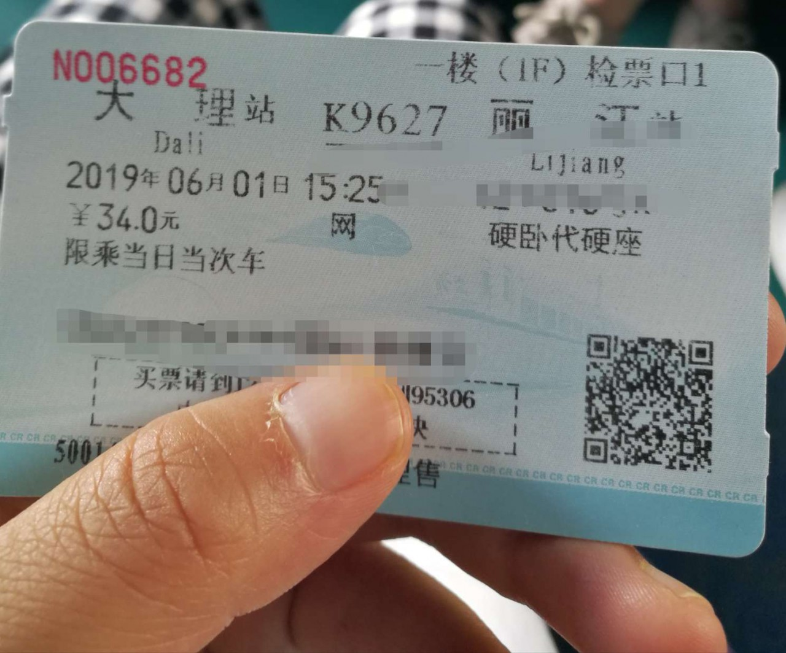
火车走走停停，18:07，用了将近3小时，终于到达丽江。一下火车又被冻得瑟瑟发抖。嬗变的天气。
缩成一团出了站，在出站口被一个人拦着介绍旅游行程安排及住宿，正好我们今晚的住宿还没定，就欣然地被小姐姐拉过来了，双方大约唠了10分钟后，我们决定不接受她的推销（估计小姐姐要气疯了）。
从丽江火车站坐着公交前往丽江古城门口（此时住宿地点还没定）。我俩现在公交上飞快地刷着美团，终于敲定了一家民宿。刚在网上定了房间，老板就打来电话，热情问“你们在哪呀，我去接你们。先加个微信吧，咱们好联系”。就这样，成功要到了微信。于是我俩在白龙广场公交站下了车，同时，也把放了水和水果的袋子落在了车上……迷糊蛋……
房东小姐姐冒雨来接我们，还热情地问我们从哪里来，要到哪里去，还推荐怎么去比较好。邻家姐姐一样，人真好耶。屁！天使的脸庞，魔鬼的心肠。“民宿是一个四层楼的院子，院子中心放着茶几和沙发，老板要我两在沙发上坐下，她坐在对面。接着给我们倒上了一杯暖暖的普洱茶，一杯茶下肚，毒妇房东悠悠地点起一支烟，开始跟我们说，她有一个很靠谱的朋友带团去香格里拉两日游，推荐给我们。面对这么热情地姐姐，怎么好意思拒绝，虽然游览路线上没有我心心念念的松赞林寺，也还是同意了。”（这是一个典型的房东骗房客的场景，房客都是在院子里一杯普洱茶下肚后被骗了，被坑得很彻底。）
买卖敲定后，我们要去吃晚饭了，这毒妇要给我们推荐吃饭的地方，由于我们原计划想吃腊排骨所以拒绝了她的推荐（幸亏拒绝了，要不然又是被坑，我们去吃饭，她从中抽成）。
腊排骨是？？？。我俩点了一份腊排骨火锅、一份水性杨花（？？）、一份土豆。吃饭时不小心打翻了水性杨花，老板免费给我们加了一盘，心里暖暖的。
回到民宿后，又在院中的茶几前和老板进行会谈，老板露出了马脚。告诉我们明天玩耍的时候有购物环节，只要我俩保持沉默不要买就行了。还说，丽江这边的人啊，说话都看起来凶凶的，你们明天见了别害怕，他们性格就是这样，不是故意吼你们的。这话一听，我心里就紧张起来了，凶？！购物？！这毒妇害我们！但已经上了贼船，我两个弱女子不能和她硬刚，何况钱已经全额交到这毒妇手上了！如果我俩说什么激烈的话，惹火了这毒妇，谁知道她会做什么。先假意附和她“没事没事，听你的，我们超级期待明天的旅行”，回学校后投诉她！
于是我俩表面笑嘻嘻迎合她，心里超级担心明天的行程。
——🍭🍭🍭🍭🍭🍭🍭🍭🍭🍭🍭🍭——
出门在外，恶贼多。问候他们。
—🍭🍭🍭🍭🍭🍭🍭🍭🍭🍭🍭🍭🍭—
5.31 06:00——05.31 23:59
————————咖喱的广告位———————————
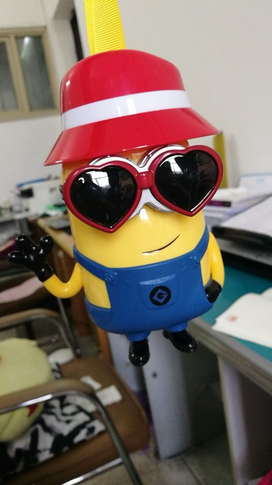
凌晨三点到了昆明机场，困，26块买了一碗面条换了一张软座睡了一个小时，结果在5点50的时候被老板以打扫卫生的理由赶了出去。我俩只得来到机场中心地铁站。
在昆明、大理乘车还是很方便的，乘地铁公交直接可以用微信的“乘车码”付钱。地铁6:20才开通第一班，我俩蹲着靠在墙角，掏出保温杯悠悠地倒了一小杯，还没喝完首班车就来了，着急忙慌上了车，整列车厢里也没几个人。走着走着车就来到了地面上，天刚蒙蒙亮，外面是低矮的房屋，应该是比较荒凉的地方吧。
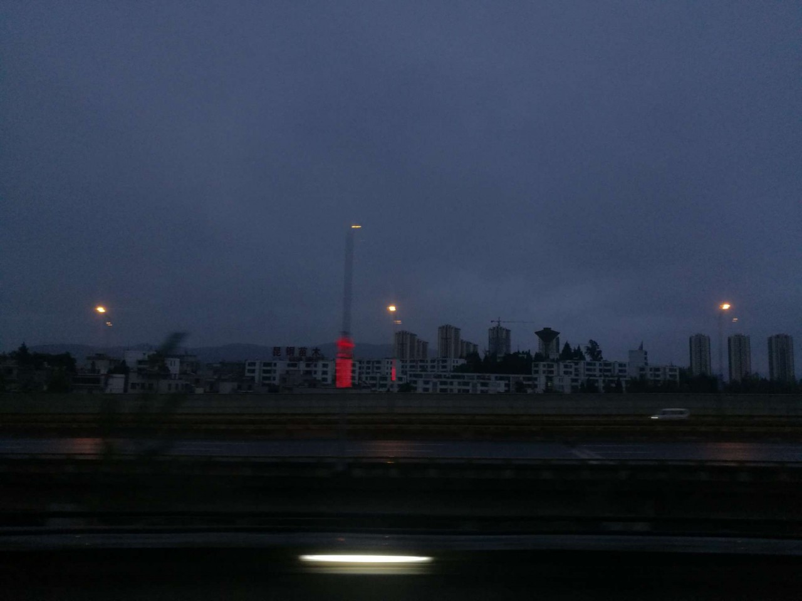
换乘了3趟地铁终于到了昆明火车站地铁站，外面淅淅沥沥的小雨，天色灰暗，从地铁站出来在地面上走了1公里才绕到了“昆明铁路大厦”，里面的基础设施建设也是有些陈旧。到达昆明火车站的时间刚刚好，07:10，我们08:02顺利上了去大理的动车。车上空座很多，我和小红顺利坐到了一起，然后开启了睡觉模式。动车快到大理时，天空忽然变亮了，和昆明相差极大。
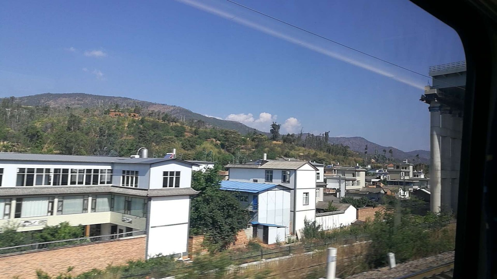
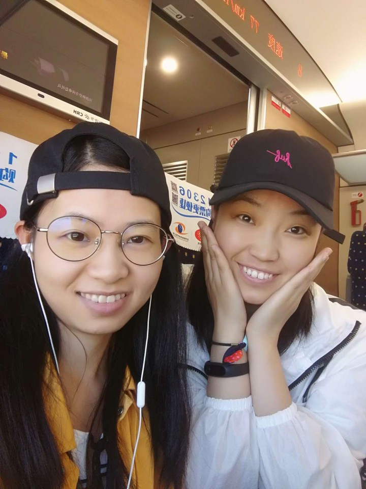
10:00到达大理站后一行人浩浩荡荡地出站了，门口前往大理古城的大巴前满是人，旅游集散中心的小姐姐也是极热情地向我们推销。我和小红顺着小姐姐的指示，直走左拐去了大理火车站的临时洗手间，着实很简陋。回来后惊呆了，大约只过了5分钟，大巴不见了，出站口关门了，小姐姐不见了……
真相是这样的：从大理火车站到大理古城的方式有两种。①公交，票价3元，8路从风花雪月酒店站下车可以到大理古城东门；三塔专线可以到大理古城南门，集散中心有很多公交，发车速度快。②专用大巴，票价5元，直达大理古城东门，这种是直达，没有经停站，所以比公交快，每1.5小时发一辆。但由于我们去洗手间，完美地错过了大巴，所以我们只能改乘8路公交去大理古城。
11:20到达了大理古城。太阳刺眼☀️，汗流浃背，饿，问自己一万次 为什么要出来！！一到古城门口，好多导游和小贩就围着我们推销，脱离了他们的包围，顺利到了预订的民宿。此民宿不推荐，房间没有空调，有蚊子，老板看着坏坏的。
13:00去吃午饭啦！【花姑娘私房菜】，吃的是菌类拼盘，小白君小红君小黑君小黄君，味道各不相同，但很确定的是菌锅不合我的口味。
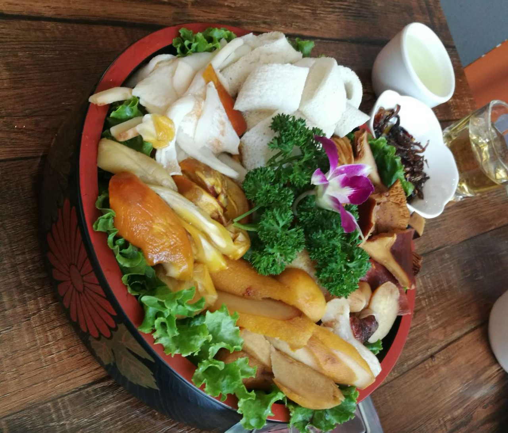
午饭后冒着烈日去游古城转三塔寺，真不是一个明智的决定。靠二路公交走到目的地，一下午拍出来的照片都是，疲惫，眯眼，犯困。三塔寺两小塔簇拥大塔，和佛教有关。
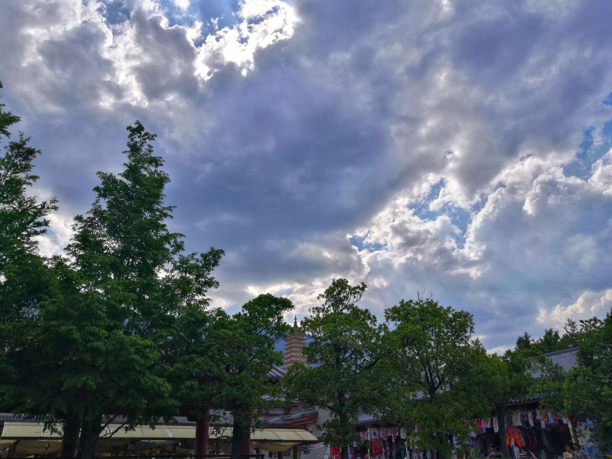
三塔寺景区门口的阿姨太过热情，我们被忽悠着买了三袋水果。这地方水果一口价，不称斤，直接10块一盘桑果，10块6个芒果这样卖，加快了兜售速度。
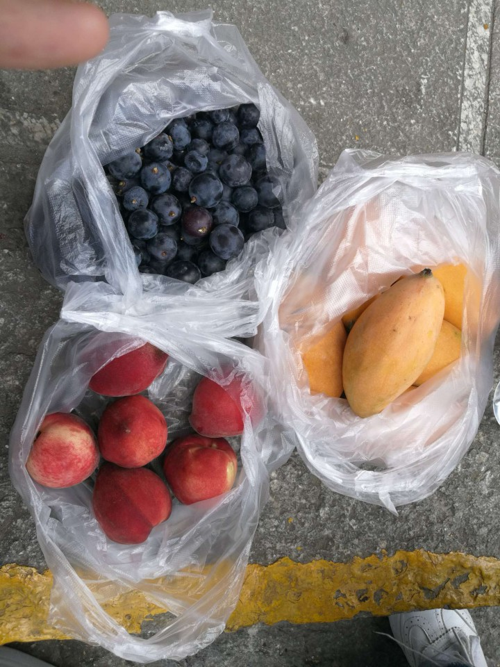
但大理的水果真心比武汉便宜，从三塔寺回来后我俩去了民宿附近的超市买了一堆水果回来：泰国菠萝、山竹、人参果。
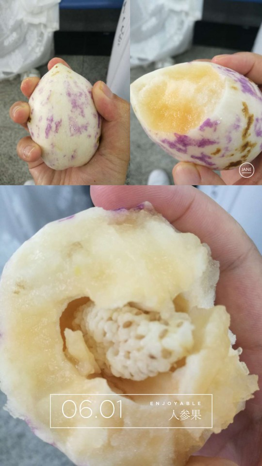
晚饭简单吃过后晚上九点从民宿出发夜游大理古城。夜晚的古城最美，这样的地方必须在晚上来逛。好多店白天歇业晚上营业，晚上巷子里好不热闹！各色酒吧灯光摇曳，里面的歌手唱得超带感！
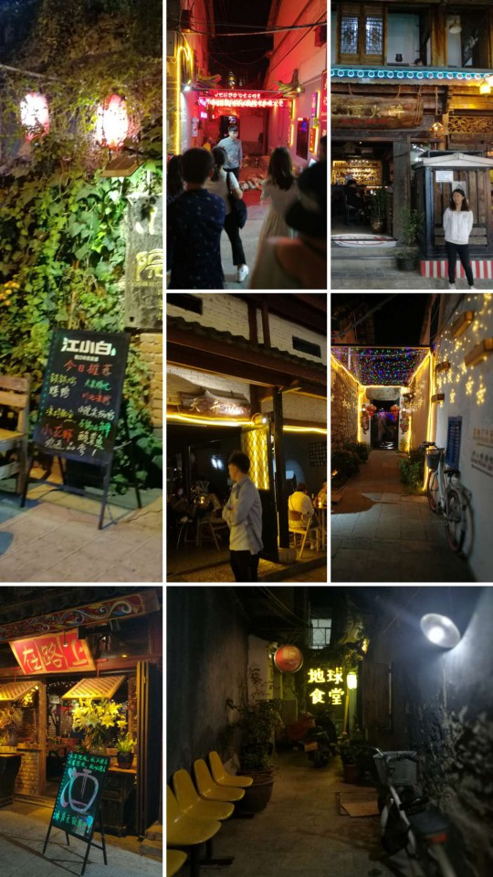
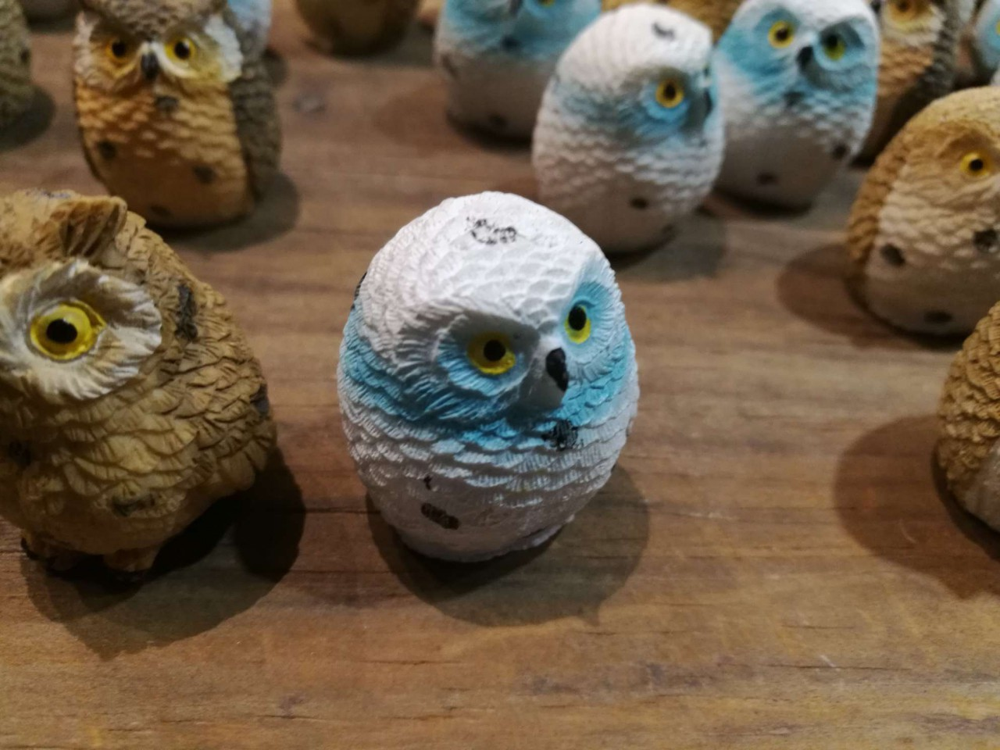
我俩也在街上开启了自拍模式。红仔说要拍得自然，光线要对，不能露出假笑，迈开步子走起来！回蓦一笑赶紧抓拍！
在洋人街门口吃到了宇宙第一好吃麻花。
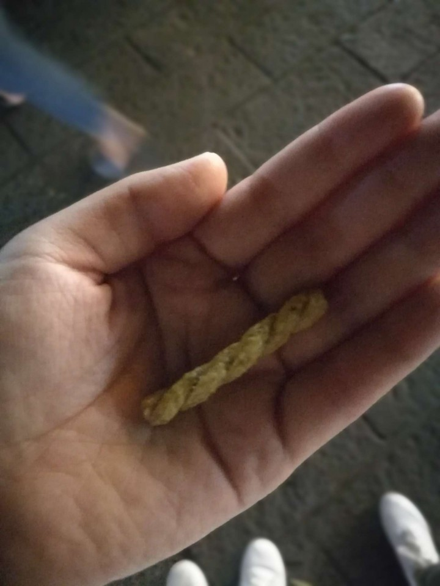
夜游完毕，回民宿。
2019.05.30 20:00-2019.05.31 04:00
之前去重庆出差，和老师、狗子一起坐飞机回武汉，在机场里一脸懵逼，全程跟着老师走。这回特意查了坐飞机的流程。
【武汉->昆明】
有很多平台可以买飞机票，各个航空公司的官网，还有携程、飞猪等第三方平台。
我们选择的是“飞猪”，这些第三方平台时不时会有红包发放。
查询航班。

贫穷限制了我的购买力，妥妥地买了最便宜的那一趟，半夜起飞。果断下单。

除了机票，还会有机建费、燃油费，最后付款总额是￥410。
事实证明，大多数时候是便宜没好货。这家航空公司差评，延误了一个小时才起飞，说是什么流量限制的原因，信了你的邪……
登录对应的航空公司官网（“祥鹏航空”，就是这家，网上一堆差评，恶性不改），选择自己想要的座位，靠窗可以看飞机穿越云层（如果是晚上飞的话，就无所谓了~_~）。
晚上8点从余家头出发，大约1小时10分钟达到武汉天河机场。
这个机场的装修高端大气档次高，羡慕机场里天天开着小车吹着空调巡逻的大爷。
从地铁里出来后前往航站楼。（航站楼，也称为航站大厦、候机楼、客运大楼。在航站楼内，乘客购票后需办理报到、托运行李，并经过安全检查及证件照查验方能登机。说白了，就是一栋集众多功能于一体的楼。）

按照路牌指示，我们上了 3F。
值机包括：选定座位（这个我们已经在网上完成了）、取登机牌（相当于火车票）、托运行李（如果需要的话）。
托运行李需要在柜台办理，同时可以在这个柜台打印登机牌。

也可以在自助机器上打印登机牌。这机器有个假的身份识别区域，还是需要手动输入身份证号的。因为我们之前在网上选了座位，所以这个机器提示的是“补打登机牌”（不慌，没毛病，毕竟选座只是完成了值机操作的一部分）

不能带液体水。充电宝、水杯和雨伞单独放在一个框，其他的放在一个框，框里的东西帅大哥和机器负责检查。
然后走过去被安检小姐姐检查一遍。
通过安全检查后，就来到了广阔的候机厅，可以前往登记口了。

候机厅里作者各式各样的男男女女。嘿嘿哈哈晚间锻炼的，呼哧呼哧狂吸泡面的，可怜巴巴等着登机的……
候机过程中取体验了机场的洗手间，这洗手间还配备着卫生纸，坐飞机的人民素质真高啊。
我师父也来看望了我们，老父亲一般回答了我们幼稚的提问，还给了我们建议。比如，可以等飞机飞平了去体验下飞机上的厕所；可以找空姐要个毯子、靠垫，感受空乘人员带来的温暖；系好安全带……
设置了紧急联系人。如果有情况 请支援我！谢谢列表里的帕特呢及各位好心人！


终于飞起来了。


外面漆黑一片，有点点星光。

睡觉……
我的旁边是一个空座位，上面放了我的帽子。途中帽子被空姐强行塞回手里，然后这位小姐姐 哐一屁股坐在空位上，重重地打了个哈欠，这漫漫长夜把空姐都逼得不优雅了。
睡觉……
下机……
（14℃的昆明下着雨让人瑟瑟发抖）
这本书从一个小姑娘的视角发现问题并解决问题，是写给小孩的理财科普读物。~_~
可以通过以下方法帮助自己明确目标并坚定信心：
找到10个变得富有的原因
制作梦想储物罐和梦想相册
在展翅飞翔之前，必须相信自己能到的目的地。必须设想自己已经拥有这些东西，这样自己的一个小愿望才会变成一种强烈的渴望，那么就会开始寻找机会来实现自己的梦想。只有心中有了强烈的渴望，才会去寻觅机会。这些视觉化的东西会刺激你的大脑，当自己想象时，强烈的渴望就产生了。
每天都要写成功日记，每次至少写5条个人成果。成功日记会让你对自己、对世界、对成功的规律产生更深入的思考，越来越多地了解自己和自己的愿望。
目标确立后，我们要做的就是行动起来！
缘分，还有时机，不是自动找上门的偶然，是带着恳切的盼望做出的无数选择，创造的奇迹般的瞬间。毫不迟疑的放弃和当机立断，弄出了时机。搞怪的不是红绿灯，不是时机，而是自己数不清的犹豫。

尝试为别人解决一个难题，那么你就能赚到很多钱
把精力集中在你知道的、你会的、和你拥有的东西上
文中举了两个少年成功赚到钱的例子。一个是少年达瑞，他每天早上替周围的邻居把报纸从院子门口送到房子门前，解决了住户冬天早上不想冒着寒风行走二三十米拿报纸的难题，同时这个机智的少年也揽下了帮住户倒垃圾的活儿，从而挣到了更多的钱。另一个少年是马塞尔，他每个周末从面包师傅那里以低价拿面包，然后送到客户手里以高价卖出，赚取差价和运费。
但文中也在提醒我们：
无论什么时候都不能把希望只寄托在一份工作上，它持续的时间不会像你想象的那么长，所以你要立即寻找另一份代替工作
72小时定律
当你决定做一件事时，必须在72小时内完成，否则可能永远不会再做了。
遇到困难时，仍然要坚持自己的想法。一切正常时，每个人都能做到这一点，只有当真正的困难出现时才能见分晓，只有少数人才能坚定不移地贯彻自己的计划。那些非常成功的人，甚至有能力在他们最困难的时候做出最杰出的表现。
困难总是不断出现，尽管如此，你每天还是要不断地去做对你的未来意义重大的事情。你为此花费的时间不会超过10分钟，但就是这10分钟会让一切变得与众不同。大多数人总是在现有水平上停滞不前，就是他们没有拿出这10分钟。他们总是期望事情向着有利于自己的方向转变，但他们忽视了一点，那就是他们必须首先改变自己。
文中吉娅雇她的好朋友莫妮卡带狗狗散步，将从主人那里得到的报酬的一半付给了莫妮卡。吉娅对于这种报酬分配方式觉得不好意思。
你干的活最多只值报酬的一半，另一半报酬源于你的想法和实践这个想法的勇气。
自己做的事也许对自己来说是微不足道的，但不能因为这微不足道就认定自己做的事对他人的价值也是微不足道。要认可自己工作的价值，并接受相应的报酬，报酬衡量的是工作对顾客的价值，而不是对自己的价值。
大多数人在使用信用卡时，比用现金花的钱多。
为了尽快偿还完贷款，卸下这副重担，很多人会选择每月担负巨大的还款金额，他们和银行约定的分期付款数额是他们刚刚能承受起的数目，但他们没有估计到生活费用是那么得高，当家里需要添置汽车等其他生活用品时，他们只得再次贷款来偿还这些东西的账单。
当他们还清债务时，他们拥有的财产为0，但一无所有不是目标，真正的目标是实现愿望（如清单所列）。
所以支付许可范围内最小的分期付款数目，每月还债的同时攒钱。
将不用于生活的那部分钱中的一半存起来
每次花钱时问一句“这真的有必要吗”
支出必然是随着收入的增长而增加的，必须学会量入而出。
一个农夫养了一只鹅，他每天的愿望就是早餐时吃一个鹅蛋。有一天早上去拿蛋时发现笼子里有一个金蛋，于是农夫把金蛋卖了换了很多钱，第二天鹅又下了金蛋，这样的情况又继续了几天。但农夫是一个贪婪的人，他希望鹅下金蛋的速度加快些，想研究出鹅产金蛋的原理，自己造金蛋。他的怒火越来越大，最终把鹅杀了，再也没有金蛋了。
我们的钱——鹅，钱存起来产生的利息——金蛋。当钱足够多时就可以依靠利息过活了，但大多数人生来没有鹅，他们的钱还不足以让他们依靠利息来生活。我们要养好自己的鹅。
养鹅大业和梦想储物罐可以同时进行，收入的 50% 存入金鹅账户，40% 放入梦想储物罐，10% 用于日常开销。
把钱投资在安全的地方，要不然钱就都没了
投资想要获得丰厚的利息
操作简单
（1）投资
一方面，投资是指通过获取利息使钱的数目增加，比如将钱买股票或存入银行；另一方面，通过购买任何一件日后会增值的物品，比如艺术品、房产、古董等，也可进行投资。
（2）交易所
是商人们为了进行商业交易而举行定期聚会的场所。交易所根据市场情况，并通过官方的价格调控使供应和需求达到平衡。
（3）股票
股票是一家公司的股权证明，你可以购买这家公司的一份或若干份股权。每一份股权就是一张股票。在购买股票，到把它卖出期间，如果公司盈利，会把利润分配给所有拥有股份的人，这叫做红利。如果公司亏损，你所持有的股票就会贬值，在这种情况下，不应急于卖出股票，而应等待公司重新盈利。
最高的红利总是从股票上获得，同时风险最大。
（4）基金
基金是出于特定用途而集中的资金。基金像一口大锅，许多投资人把钱投进去，因为这些人没有时间、没有时间或没有兴趣去亲自购买股票。这口锅里的钱交给金融街的专家——基金经理人，去投资买股票。国家对此进行严格的监督，基金经理人必须遵守一定的规定。例如：他们必须购买20种不同的股票。
【挑选基金注意事项：】
如果它在这么长时间内一直有丰厚的盈利，那么我们可以认为它未来会运作良好。
这种基金在世界各地购买股票，可以分散风险，十分安全。
选择过去十年间哪些基金的年终获利最好。
【72定理】
72 / 通货膨胀率百分比 = 在一定的通货膨胀率下，我们的钱多长时间后会贬值一半
72 / 年收益率百分比 = 在一定的年收益率下，我们的钱多长时间后会翻一番
（4）抵押
抵押就是把地产等抵押品作为债务担保的行为。当房子所有权人负债时，他可以抵押这栋房子，作为法律和经济上还款的保证，这样一来，他的地产就计入了债权人名下。这样一来，这栋房子的所有权就受到了限制，如果债务人——房子所有权人出售他的房子，获得的利益必须交给债权人。
（5）通货膨胀
即货币贬值，货币的价值随着时间的增长而不断减少。现在用 5￥ 可以比10年后买到更多的东西。
（6）利息
如果你将资金借给银行（即把钱存入账户），银行会付给你一定的金额作为回报，这个金额按照规定的利率计算。
（7）复利
你可以和银行约定，每年年终时将利息计入本金。
我们推崇一种聪明、简朴的生活方式。宁愿购买一件一流产品，也不要不停购买许多的二流产品。而且，不要仅仅因为一件产品的外观不再时髦而新产品正在流行，就不断追逐新鲜的东西。
老汪大号汪美溪，字子美。老汪他爹是县城一个箍盆箍桶的箍桶匠，外加焊洋铁壶。汪家箍桶铺子西边，挨着一个当铺叫“天和号”。“天和号”的掌柜姓熊。老熊他爷是山西人，五十年前，一路要饭来到延津。一开始在县城卖菜，后来在街头钉鞋；顾住家小后，仍改不了要饭的习惯；过年时，家里包饺子，仍打发几个孩子出去要饭。节俭自由有俭的好处，到了老熊他爹，开了一家当铺。这时就不要饭了。一开始当个衣衫帽子，灯台瓦罐，但山西人会做生意，到老熊手上，大多是当房子、当地的主顾，每天能有几十两银子的流水。老熊想扩大门面，老汪的箍桶铺子，正好在熊家前后院的东北角，使老熊家的院子成了刀把形，前窄后阔。老熊便去与老汪他爹商量，如老汪他爹把箍桶的铺面让出来，他情愿另买一处地方，给老汪他爹新盖个铺面。原来的铺面有三间，他情愿盖五间。门面大了，可以继续箍桶，也可以做别的生意。这事对老汪家也算合算，但老汪他爹却打死不愿意，宁肯在现有的三间屋里箍桶，不愿去新盖的五间屋里做别的生意。不让铺面不是和老熊家有啥过节，而是老汪他爹处事与人不同，同样一件事情，对自己有利没利他不管，看到对别人有利，他就觉得吃了亏。老熊见老汪他爹一句话封了口，没个商量处，也就作罢。
老汪他爹的箍桶铺面的东边，是一家粮栈“隆昌号”，“隆昌号”的掌柜叫老廉。这年秋天，汪家修房顶，房檐出得长些；下雨时，雨顺着房檐滴洒在廉家的西墙上；但廉家的房檐也不短，已滴洒了汪家的东墙十几年。但世上西北风多，东南风少，廉家就觉得吃了亏，为房檐滴雨，两家吵了一架。“隆昌号”的老廉不同于“天和号”的老熊，老熊性子温和，遇事可商量，老廉性子躁，遇事吃不得亏，两家吵架的当天晚上，他指使自己的伙计，爬到汪家屋顶，不但拆了汪家的房檐，还揭了汪家半间瓦。两家从此打起了官司。老汪他爹不知打官司的深浅，也是与老廉赌着一口气，官司一打两年，老汪他爹也顾不上箍桶。老廉上下使钱，老汪他爹也跟着上下使钱。但汪家的家底，哪里随得上廉家？廉家的粮栈“隆昌号”，每天有几十石粮食的进出。延津的县官老胡又是个糊涂人，两年官司下来，也没打出个所以然，老汪他爹已经把三间铺子折了进去。“天和号”的老熊，又花钱从别人手里把三间铺子买了过来。老汪他爹在县城东关另租一间小屋，重新箍桶。这时，他不恨跟自己打官司的“隆昌号”老廉，单恨买自己铺子的“天和号”掌柜老熊。他认为表面上是与老廉打官司，廉家背后肯定有老熊的指使。但这是再与老熊理论，也无处理论，老熊他爹另做主张，那年老汪十二岁，便把老汪送到开封读书，希冀老汪十年寒窗做官，一放官放到延津，那时再与老熊理论。也是君子报仇，十年不晚的意思。